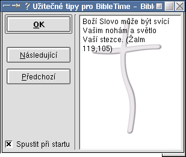

| Dokumentace k programu BibleTime | ||
|---|---|---|
| Předcházející | Další | |
BibleTime je program pro KDE a je integrováno s KDE desktopem. Na va¹í pracovní plo¹e nebo v menu byste mìli najít ikonku BibleTime, pomocí které mù¾ete program spustit.

BibleTime mù¾e být spu¹tìno i z jiných správcù plochy nebo oken (napø. GNOME), pokud jsou nainstalovány knihovny potøebné pro bìh KDE programù.
BibleTime je mo¾né spustit i z pøíkazové øádky pøíkazem bibletime. Musí ale být spu¹tìné grafické prostøedí (X Window System).
Bìhem spou¹tìní aplikace BibleTime mù¾ete vidìt následující okna:
Nejsou nainstalovány moduly - zobrazí se v pøípadì, ¾e jste zapomnìli nainstalovat moduly SWORDu nebo tyto moduly nelze nalézt. Kliknìte pro nápovìdu
První spu¹tìní - pokud spou¹títe BibleTime úplnì poprvé. Kliknìte pro nápovìdu
Tip dne - zobrazuje se pøi ka¾dém spu¹tìní, pokud to nezaká¾ete.

| Předcházející | Domů | Další |
| Motivace | Nahoru | Èásti okna aplikace BibleTime |